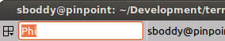

The Grouping Menu¶
Manipulating terminal groups¶
Grouping, as the name suggests, allows grouping of terminals allowing actions to be taken that affect more than one terminal. As usual, following along will help understanding, so lets start with a basic window, then split into a 2x2 grid.
Let’s have another look at the grouping menu for reference, because as we proceed, it will change:

The first item New group... allows you to create a named group, using an editable field that will appear next to the 3-box icon. By default this will be given a randomly selected name from the names of the Greek alphabet. Here you can see Phi was selected:
You can either start typing to replace the provided one with something
more descriptive, or you can accept the default with Return. For
the purpose of this document I will just be using default names.
If you again click the 3-box/group button, you will see that several new entries have been added to the menu:

Because the terminal now has a group the first new entry is None which will remove the grouping for this terminal.
Following that is a list of the known groups, in this case only Phi so far. This list (plus the None entry) can be used to change the group of this terminal.
Next are two items: Remove group Phi and Remove all groups. You will only get the currently assigned group group as an option to remove, as well as an option to remove all groups. This does not close the group, but simply removes the group assignments from the terminals.
The next option is more destructive: Close group Phi will exit the terminals assigned to this group.
Here I’ve gone ahead and set the upper right terminal to the same Phi group, and the lower left terminal to a New group... of Epsilon.

A quick glance at the menu again will show that the only change is the addition of the Epsilon group to the list.
To change a group name you can either click on New group... again,
or Shift+click on the 3-box/group button, and the editable
field will reappear.
The current terminal is the one with focus. By clicking with key modifiers on other terminals 3-box/group button we can speed up group organisation. Here’s a list of mouse actions (including some already detailed):
| Action | Mouse | Default Shortcut |
|---|---|---|
| Group menu popup | click |
(TBD) |
| Edit group for terminal | Shift+click |
(TBD) |
| Edit group for all terminals in the “group” | Shift+Super+click |
(TBD?) |
| Toggle to current terminals group [1] | Ctrl+click |
|
| Toggle “group” to current terminals group [1] | Ctrl+Super+click |
| [1] | (1, 2) These shortcuts will only work if you use them on terminals that are not the current terminal. |
Warning
The terminals with no named group are also considered a
group. If you use one of the Super shortcuts on a
terminal with no group, you will also include all the
other terminals with no group.
Skipping slightly ahead in the menu, there are two options that make more sense covered here. The Split to this group (default: off) option means that when you split the current terminal, the new one will inherit the group of the current terminal. It is off by default in which case new terminals have no group.
The second option Autoclean groups (default: on) will remove a group from the menus group list when the last terminal with that group is closed. If off groups will remain in the list until the application exits, or the option is enabled.
Note
Not shown in the above screenshots, there are also menu items for grouping all terminals in a tab in the menu. They only appear once a new tab is created - Group all in tab and Ungroup all in tab.
Some final group related shortcuts are for grouping all terminals at once, or grouping terminals in the same tab.
| Action | Default Shortcut |
|---|---|
| Group all | Super+G |
| Ungroup all | Shift+Super+G |
| Group tab | Super+T |
| Ungroup tab | Shift+Super+T |
| Group all toggle | |
| Group tab toggle |
Broadcasting input to multiple terminals¶
So first let me describe some terminology (no pun intended). Broadcasting is the act of sending your input to multiple terminals. The current terminal (the one with the red titlebar by default) is always the broadcaster. Any terminal that is in the same group as the current terminal is a potential receiver. I say potential because the act of broadcasting can be turned on and off independently of the grouping.
This can be an invaluable time-saver when having to do active investigation across multiple machines where you would be repeating the same commands on each of them.
Terminator’s titlebar is colour-coded to help you quickly see which terminals are potential receivers, and whether they will receive the broadcast input.
The titlebar is split into two parts. The leftmost part is the 3-box/group button that has one of three background colours as defined in the Global tab of Preferences Window:
- Red - The current terminal and broadcaster.
- Blue - A terminal that is in the same group as the broadcaster.
- Grey - A terminal in a different group, or no group.
The second part consists of the title, and uses the same colouring to show the following:
- Red - The current terminal and broadcaster.
- Blue - A terminal that is acting as a receiver and will duplicate input from the broadcaster.
- Grey - A terminal that is not a receiver.
There are three settings for broadcasting, selected from the Group
menu. Following are an image of each of these modes, with test
typed into the current broadcasting terminal:
Broadcast off

Here you can see that only the current terminal receives input, even though the upper right terminal is also a part of the Phi group.
Broadcast all

Here you can see that all terminals, including those in other groups, or with no group, receive the input.
Broadcast group (default mode; can be changed in the Global tab of Preferences Window.)

Here you can see that only the terminal(s) in the same group in the same group as the broadcaster receive input.
Be careful with additional tabs, windows, or when you are zoomed or maximised on a single terminal. Just because you cannot see a terminal does not mean the terminal is not receiving. This can cause problems if you are typing a destructive command without realising that this command is going to other terminals.
Those with good eyesight may have spotted the other visual indicator of the colours in the 3-box icon changing for the different status of the terminals too. When you are zoomed or maximised, the presence of blue in this icon might be the only visual indicator of receivers.
As with all things in Terminator, we have shortcuts to help you keep your hands on the keyboard:
| Action | Default Shortcut |
|---|---|
| Broadcast off | Alt+O |
| Broadcast all | Alt+A |
| Broadcast group | Alt+G |
Warning
It has become apparent that IBus causes problems with
broadcast input. When multiple keystrokes are used to
compose a letter, such as the AltGr+[
followed by a, o, u keys to get ä,
ö, ü characters for the German language.
Instead of getting your composed letter in all receivers, you will only get the composed letter in the current terminal. If you copy and paste the character into the current terminal then it will be input into the receivers.
You may not even realise that you are running IBus. Killing it will temporarily fix the problem. There is a fix for IBus and VTE, but only in the newer builds of VTE. For that we would need the experimental GTK3 version of Terminator.
Insert terminal number¶
The last two menu items are slightly out of place here. They are the same function as the shortcuts mentioned here. They were added early on when the broadcast feature was added, and the argument could be made for removing them. So far no-one has though, so for now they will stay here.